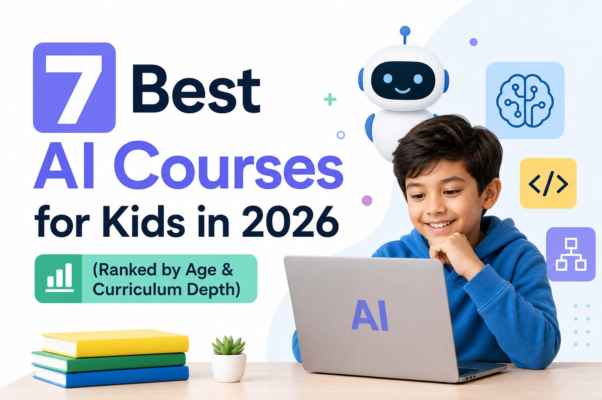

Quick Answer: Top 7 AI Courses for Kids
- Codeyoung — Best overall. AI is integrated into every age-banded course, with the right depth for each stage: using AI (5–9), integrating it into real projects (10–13), and building with it, including machine learning (14+).
- BrightCHAMPS — Best for a dedicated, standalone Gen AI track alongside separate coding courses.
- Juni Learning — Best for 1-on-1 AI tutoring with individualized pacing.
- Create & Learn — Best for short-term AI workshops and camps.
- Codecademy — Best for older, self-directed teens ready for real AI/ML coursework.
- Vidcode — Best for creative, project-based coding for teens, with limited AI-specific content.
- iD Tech — Best for intensive AI-themed camps for advanced teens.
Why "One AI Course" Doesn't Work Across All Ages
"AI course for kids" sounds like a single thing, but it isn't — and treating it like one is where most programs go wrong. You can't teach a 6-year-old machine learning. You also shouldn't limit a capable 15-year-old to just "how to write a good prompt." The right AI education for a child depends entirely on where they are developmentally, and the best programs structure around that instead of offering one AI course for every age.
That's the real test for evaluating any "AI course for kids" claim: does it match the complexity of what's being taught to what a child at that age can actually understand and use? A program that teaches every age the same surface-level prompting skills is underserving older kids. A program that jumps straight into neural networks with a 7-year-old is skipping the foundation entirely.
Below are the 7 best AI courses for kids, ranked on two criteria: whether AI content is genuinely matched to a child's age and developmental stage, and whether it's built into the broader curriculum rather than isolated as one disconnected unit.
Comparison Table
| Platform | Best For | Age Range | AI Approach | Format |
|---|---|---|---|---|
| Codeyoung | Age-matched AI integrated across every course | ~6–17 | Built into every course, scaled by age | Live, instructor-led, small groups |
| BrightCHAMPS | Standalone Gen AI track | 6–16 | Dedicated AI/Gen AI courses, separate from coding track | Live, 1-on-1 |
| Juni Learning | 1-on-1 AI tutoring | 7–18 | Standalone AI course tracks | Live, 1-on-1 |
| Create & Learn | Short-term AI workshops | 5–18 | Dedicated AI-themed workshops | Live, short courses/camps |
| Codecademy | Self-directed teens | 13+ | Real AI/ML coursework for advanced learners | Self-paced |
| Vidcode | Creative, project-based coding | 8–18 (grades 3–12) | Limited, general-purpose | Self-paced / classroom |
| iD Tech | Intensive AI-themed camps | 7–19 | Offered as specific camp tracks | Camps (online/in-person) |
1. Codeyoung — Best Overall for Age-Matched AI Education
Best for: Parents who want AI woven into every stage of their child's coding education, at the right depth for each age.
Codeyoung doesn't treat "AI course" as one product. Instead, AI is built into every age band of its coding curriculum, with the complexity scaled to match what a child can actually absorb and use at that stage.
Ages 5–9: Scratch + Learning to Use AI Properly
At this stage, the goal isn't building AI — it's learning to use it well. Kids start with Scratch, building the same core logic — loops, conditionals, events — that underlies every language they'll use later. Alongside that, AI is introduced in simple, age-appropriate ways: guided exposure to what AI tools do, and early practice questioning their answers instead of accepting them automatically. The emphasis is on using AI as a learning aid, not a shortcut.
Ages 10–13: Web or App Development + AI Integration
As kids move into real, text-based programming through Web Development or App Development, AI becomes part of the actual workflow — used to help debug, understand unfamiliar code, and assist with real projects. This is the bridge stage: kids are building real things, with AI as a working tool rather than a topic discussed separately.
Ages 14+: Web Dev, App Dev, or Machine Learning with Python
Teens who are ready go further, with the option to move into Machine Learning with Python — genuinely building AI-assisted applications and understanding how models work under the hood, alongside continued options in web and app development with AI integrated throughout.
The throughline across all three stages: AI isn't a single elective bolted onto the curriculum. It's part of every course, scaled to what's actually appropriate for a child's stage of development — which is a meaningfully different approach from a platform offering one generic "AI class" for every age.
Pros
- AI content is matched to age and developmental stage, not one-size-fits-all
- AI is integrated into the core curriculum at every level, not offered as a separate track
- Clear progression from using AI (5–9) to integrating it into projects (10–13) to building with it, including real ML (14+)
Cons
- Live format requires a scheduled time commitment, unlike self-paced platforms
- Younger age bands are intentionally foundational, not "AI-building" — by design, not by omission
2. BrightCHAMPS — Best for a Dedicated Gen AI Track
Best for: Families who want a standalone AI/Gen AI course alongside — but separate from — a coding track.
BrightCHAMPS offers "AIChamps" and Gen AI courses covering prompt crafting, generative AI tools, and Python, alongside its separate CodeCHAMPS programming track, for kids aged 6–16.
Pros
- Dedicated, structured Gen AI curriculum with clear progression (introductory to advanced)
- Live, 1-on-1 instruction with age-tagged course levels
Cons
- AI and coding are offered as separate course tracks rather than one integrated curriculum
- Premium pricing, with reviews noting mixed experiences around billing and support
3. Juni Learning — Best for 1-on-1 AI Tutoring
Best for: Families who want individualized pacing through a private AI-focused tutor.
Juni offers private, one-on-one instruction with AI-focused course tracks alongside its broader computer science curriculum, for students ages 7–18.
Pros
- Fully individualized pacing through private tutoring
- Guided pathway from beginner visual coding through more advanced AI topics
Cons
- Higher price point than group-based programs
- AI concepts are offered as standalone courses rather than integrated across the full curriculum
4. Create & Learn — Best for Short-Term AI Workshops
Best for: A low-commitment introduction to AI concepts or a summer supplement.
Create & Learn runs short courses and camps that include dedicated AI-themed workshops alongside its broader coding offerings.
Pros
- Good entry point for trying AI topics without a long-term commitment
- Age-appropriate workshop options across a wide range
Cons
- Workshop-style format is less suited to building deep, cumulative AI or coding skills over time
- AI content is offered separately rather than integrated into an ongoing curriculum
5. Codecademy — Best for Older, Self-Directed Teens
Best for: Self-motivated teens ready to tackle real AI/ML coursework independently.
Codecademy offers genuine AI and machine learning coursework as part of its broader programming catalog, aimed at learners roughly 13 and up who are comfortable working independently.
Pros
- Real, substantive AI/ML content, not a simplified kids' version
- Flexible, self-paced schedule
Cons
- No live instruction, so younger teens or those needing accountability may struggle to stay on track
- Not age-differentiated in the way a kids-specific platform is — content is general-purpose
6. Vidcode — Best for Creative, Project-Based Coding
Best for: Teens who want to combine coding with digital media and creative projects.
Vidcode teaches computer science through creative coding projects — video filters, games, simulations — using JavaScript, aimed at grades 3 through 12.
Pros
- Strong creative, project-based approach that appeals to media-interested teens
- Research-backed curriculum with structured, standards-aligned lessons
Cons
- AI-specific content is limited; the platform's strength is creative coding, not AI or ML specifically
- Less suited to families specifically looking for AI/ML depth
7. iD Tech — Best for Intensive AI-Themed Camps
Best for: A highly motivated teen wanting an immersive, short-term AI deep dive.
iD Tech offers camp-style courses (online and in-person) that include AI-themed tracks alongside its broader programming and game design offerings, for kids and teens.
Pros
- Immersive, intensive format for fast skill-building
- AI offered as a specific, focused track for interested teens
Cons
- Less suited to families wanting a steady, ongoing AI curriculum across multiple years
- AI concepts appear as a specific course offering, not built into a broader, ongoing curriculum
What to Look For When Choosing an AI Course for Your Kid
If you're comparing options beyond this list, three questions will tell you more than any marketing page:
1. Is the AI content actually matched to your child's age?
A course that teaches the exact same AI concepts to a 6-year-old and a 15-year-old hasn't thought carefully about either of them. Ask what specifically changes as a child gets older.
2. Is AI part of the curriculum, or a separate add-on?
Some programs teach AI as a self-contained unit disconnected from the rest of what a child is learning. The strongest programs integrate it into the coding work itself.
3. Does the program distinguish between "using AI" and "building with AI"?
A young child using AI as a learning aid and a teen building a machine learning model are doing fundamentally different things. Make sure the program is honest about which one it's actually offering at your child's age.
Frequently Asked Questions
Can a 6-year-old learn AI?
Yes, but not in the sense of building machine learning models. At this age, "learning AI" means age-appropriate exposure to what AI tools do, guided practice questioning their answers, and using AI as a learning aid — not building or training anything.
What's the right age to start machine learning?
Most programs introduce genuine machine learning concepts starting around age 14, once a child has a solid foundation in programming logic and is ready for more abstract, technical material.
Should AI be a separate course or part of every course?
Both approaches exist, but integrating AI into a child's ongoing coding curriculum — rather than isolating it as a single standalone unit — tends to build more practical, lasting skills, since kids apply AI concepts directly to real projects instead of learning them in isolation.
What comes after Scratch?
Most kids move from Scratch into a text-based language like Python, JavaScript, or into web/app development, typically between ages 10 and 13, once they've built solid logic skills and stronger reading fluency.
Methodology
This ranking evaluates each platform on two factors stated upfront: whether AI content is matched to a child's age and developmental stage, and whether AI is integrated into the broader coding curriculum versus offered as an isolated, standalone course. Platform details are based on each provider's publicly available course structure and format as of mid-2026.
The Bottom Line
The best AI course for a kid isn't the one with the most advanced-sounding curriculum — it's the one that teaches the right thing at the right age, and connects it to real coding skills rather than isolating it as a novelty unit. Codeyoung's approach reflects that directly: Scratch and guided AI use for younger kids, AI-integrated web and app development for the middle years, and real machine learning for teens who are ready — all built around the idea that AI should be part of how kids learn to code, not a separate subject entirely.
Want coverage like this distributed for your brand?
Distribute Your Release — $999